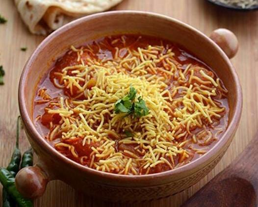

|  |
-
સેવ ટામેટાનું શાક સામગ્રી:
- ૫ મધ્યમ લાલ પાકેલાં ટામેટાં, કાપેલા
- ૧/૨ કપ નાયલોન સેવ અથવા જાડી સેવ
- ૧/૨ ટીસ્પૂન જીરું
- ૧/૪ ટીસ્પૂન રાઈ
- ૧ મધ્યમ ડુંગળી, બારીક સમારેલી, વૈકલ્પિક
- ૧ ટીસ્પૂન આદું-લસણ ની પેસ્ટ
- ૧ લીલું મરચું, બારીક સમારેલું
- ૨ ટીસ્પૂન ખાંડ
- ૧/૨ ટીસ્પૂન લાલ મરચું પાઉડર
- ૧/૪ ટીસ્પૂન હળદર
- ૧ ટીસ્પૂન ધાણાજીરું
- ૧/૪ ટીસ્પૂન ગરમ મસાલા પાઉડર, વૈકલ્પિક
- ૨ ટેબલસ્પૂન બારીક સમારેલા લીલા ધાણા (કોથમીર)
- ૨ ટેબલસ્પૂન તેલ
- મીઠું સ્વાદ અનુસાર
- ૧/૨ કપ પાણી
|
સેવ ટામેટાનું શાક બનાવવાની રીત:
|
- એક કડાઈમાં મધ્યમ આંચ પર તેલ ગરમ કરો. તેમાં રાઈ અને જીરું નાખો; જ્યારે રાઈ ફૂટવા લાગે ત્યારે તેમાં કાપેલી ડુંગળી નાખોં અને તેને હલ્કી બદામી રંગની થાય ત્યાં સુધી સાંતળો. તેમાં આદું-લસણની પેસ્ટ અને કાપેલું લીલું મરચું નાખોં અને ૧૫-૨૦ સેકંડ માટે સાંતળો.
- તેમાં કાપેલા ટામેટાં નાખોં અને એક મિનિટ માટે સાંતળો.
- તેમાં મીઠું, ખાંડ અને હળદર નાખોં. બરાબર મિક્ષ કરો અને ૨-૩ મિનિટ માટે મધ્યમ આંચ પર પકાવો.
- તેમાં ૧/૨ કપ પાણી નાખોં અને બરાબર મિક્ષ કરો. ટામેટાં નરમ થઈ જાય ત્યાં સુધી (લગભગ ૪-૫ મિનિટ સુધી) ધીમી આંચ પર પકાવો. ક્યારેક ક્યારેક વચ્ચે ચમચાથી હલાવતા રહો.
- તેમાં લાલ મરચું પાઉડર, ગરમ મસાલા પાઉડર, ધાણાજીરું અને સેવ નાખોં.
- તેને બરાબર મિક્ષ કરો અને ૧-૨ મિનિટ પકાવો. ગેસ બંધ કરી દો.
- સેવ ટામેટાંના શાકને એક પીરસવાના બાઉલમાં કાઢો અને લીલા ધાણાથી સજાવો. તેને રોટલી, થેપલા અથવા પરોઠાની સાથે ગરમ પીરસો.
|